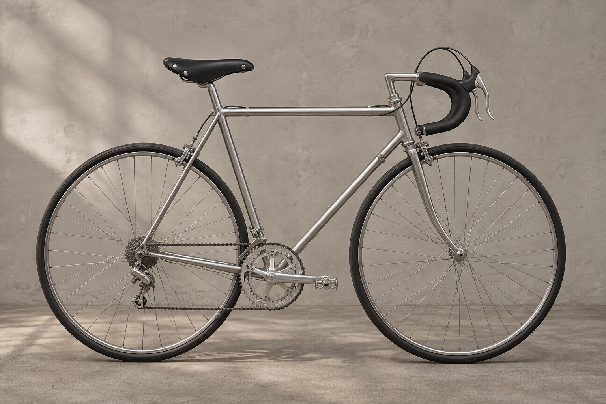

Field Guide · Design preview
Explore how we perceive.
Look closely, listen carefully, and see how your judgments compare with a model’s.

How to play
Choose a topic
Start with a visual or auditory challenge. Keep your viewing distance steady or use the volume check.
Make a judgment
Choose what you see or hear. Each challenge gives you its own prompts.
Compare answers
Open Results to see where your answers and the model’s agreed or differed.
Choose a challenge
Explore how people and models respond to the same sights and sounds.
Accuracy by blur
Sample results showing how the design presents human and model scores.
0 px
4 px
12 px
24 px